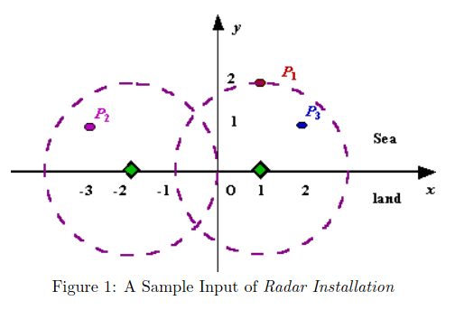

class: center, title-slide <br><br> ## CSCI-UA 480: APS ## Algorithmic Problem Solving <br/><br/><br/><br/><br/><br/><br/> ## Greedy Algorithms .author[ Instructor: Joanna Klukowska <br> ] .license[ Copyright 2020 Joanna Klukowska. Unless noted otherwise all content is released under a <br> [Creative Commons Attribution-ShareAlike 4.0 International License](https://creativecommons.org/licenses/by-sa/4.0/).<br> Background image by Stewart Weiss<br>] --- layout:true template: default name: section class: inverse, middle, center --- layout:true template: default name: challenge class: challenge --- layout:true template: default name: poll class: inverse, full-height, center, middle --- layout:true template: default name: breakout class: breakout --- layout:true template:default name:slide class: slide .bottom-left[© Joanna Klukowska. CC-BY-SA.] --- ## Greedy - Solving problems by making locally (at each step) optimal choices in the hope of obtaining an optimal solution overall. - When does it work? - The problem has optimal substructure: an optimal solution to the problem contains optimal solutions to its subproblems. - The problem has the greedy-choice property: there is an optimal solution that begins with the locally optimal choice (making locally optimal choices does not guarantee a bally optimal solution for all problems). - examples --- class:challenge ## Challenge: Making Change __Task__ Given an amount V (in cents) and a list of n coin denominations, find a way to make change using the minimum number of coins. Assume that you have an unlimited supply of each denomination. --- class:challenge ## Challenge: Making Change __Example__ - n = 4 - denominations = {25, 10, 5, 1} cents - desired amount V = 47 cents Solution: - start with the largest denomination and use as many coins as possible<br> 47 - 25 = 22 - use the next highest denomination <br> 22 - 10 = 12 <br> 12 - 10 = 2 <br> - the remaining amount is too small for the denomination of 5, so skip it - use the last denomination <br> 2 - 1 = 1 <br> 2 - 1 = 0 <br> So, we need 5 coins: 25, 10, 10, 1, 1. --- ## Challenge: Making Change For the denominations {25, 10, 5, 1}, taking the largest possible coin first produces an optimal solution for this example (47 cents). For instance, after taking 25, the remaining 22 cents can be made with four coins: {10, 10, 1, 1}. However, the fact that it works for this example does not guarantee that it will work for all amounts. -- <br><br> __This approach does not work for all denominations. It does work for American coins with denominations {25, 10, 5, 1} cents.__ -- <br><br> Consider denominations {4, 3, 1} and an amount of 6 cents. - Greedy takes 4, then 1, then 1: 3 coins. - An optimal solution is 3 + 3: 2 coins. The problem still has optimal substructure, but the largest-coin-first choice is not always part of an optimal solution. --- class:challenge ## Computing Center Load Balancing You operate a supercomputing center with M nodes. One day, a research institute from Light Kingdom submits N computational tasks. Given the computational power required for each task, distribute the tasks among the available nodes. Each node can process up to two tasks. Minimize the workload imbalance, defined as follows: $$Imbalance = \sum_{i=0}^{M-1}{|Avg-Load_i|} $$ where $Avg$ is the average load per node and $Load_i$ is the load on the i-th node. __Input__: The first line of the input contains two integers, M (1 <= M <= 5) and N (1 <= N <= 2M), indicating the number of nodes and tasks, respectively. The second line contains N integers, each representing the computational power required for a task. Each value is between 1 and 1000. __Output__: Print one line, `IMBALANCE = I`, where `I` is the minimum imbalance value, rounded to 5 decimal places. --- ## Computing Center Load Balancing .left-column2[ You operate a supercomputing center with M nodes. One day, a research institute from Light Kingdom submits N computational tasks. Given the computational power required for each task, distribute the tasks among the available nodes. Each node can process up to two tasks. Minimize the workload imbalance, defined as follows: $$Imbalance = \sum_{i=0}^{M-1}{|Avg-Load_i|} $$ where $Avg$ is the average load per node and $Load_i$ is the load on the i-th node. ] -- .right-column2[ __Example 1__ ``` Input: 2 3 6 3 8 Output: IMBALANCE = 1.00000 ``` __Example 2__ ``` Input: 3 5 51 19 27 14 33 Output: IMBALANCE = 6.00000 ``` __Example 3__ ``` Input: 5 9 1 2 3 5 7 11 13 17 19 Output: IMBALANCE = 11.60000 ``` ] --- ## Computing Center Load Balancing .left-column2[ You operate a supercomputing center with M nodes. One day, a research institute from Light Kingdom submits N computational tasks. Given the computational power required for each task, distribute the tasks among the available nodes. Each node can process up to two tasks. Minimize the workload imbalance, defined as follows: $$Imbalance = \sum_{i=0}^{M-1}{|Avg-Load_i|} $$ where $Avg$ is the average load per node and $Load_i$ is the load on the i-th node. ] .right-column2[ __Observation 1__: If there is an empty computing node in the final solution, then moving one task of load `w` from any node with total load `L` to the empty node reduces the imbalance. The two node loads change from (0, L) to (w, L − w). Since 0 ≤ w ≤ L, this makes the pair of loads no more spread out, so their total absolute deviation from the fixed average cannot increase. __Observation 2__: In a solution with all M nodes occupied, if N > M, then exactly N-M tasks share a node with another task. ] --- ## Computing Center Load Balancing -- Greedy algorithm Let `A` be the task loads sorted in nondecreasing order. Add `2M-N` dummy tasks of load 0, then sort the resulting `2M` values. Pair the smallest with the largest, the second-smallest with the second-largest, and so on. Assign each pair to one node; a dummy task represents an unused task slot. ``` balance(M, tasks): A = tasks + [0] * (2*M - len(tasks)) sort A for i = 0 to M-1: node[i] = (A[i], A[2*M - 1 - i]) return node ``` The zero padding also handles `N <= M`: each real task is paired with a zero, and any remaining nodes receive two dummy tasks. --- ## Computing Center Load Balancing -- Why the pairing works Pairing small and large loads keeps the node totals close together. For `a <= b <= c <= d`, the sums `a+d` and `b+c` are no farther apart than the sums `a+b` and `c+d`. These two pairings have the same total, and the sum of absolute deviations from the average cannot increase when two loads with a fixed total become closer. Repeatedly applying this exchange yields the smallest-with-largest pairing. The dummy zeros let the same exchange argument handle nodes with one or zero tasks. This gives an `O(N log N)` algorithm, dominated by sorting. --- ## [Radar Installation](https://onlinejudge.org/external/11/1193.pdf) - __Given__: - a set of islands (points) in the sea (`y > 0`, `x` unrestricted) - a radar range `d`. - __Constraint__: Radars must be placed on the coast (the x-axis). - __Coverage__: A radar covers any island within distance d. - __Objective__: Find the minimum number of radars needed to cover all islands. - __Output__: Report the minimum count, or -1 if it is impossible to cover all the islands. -- .left-column2[ __Example__ d = 2 islands: (-3, 1), (1,2), (2,1) ] .right-column2[ <p></p> ] --- ## [Radar Installation](https://onlinejudge.org/external/11/1193.pdf) __Idea__ - For each island, compute the interval of possible radar positions: [xi - sqrt(d² - yi²), xi + sqrt(d² - yi²)]. - By always placing the radar at the rightmost possible position that still covers the current island, we ensure that it covers as many subsequent islands as possible. This is a greedy strategy. --- ## [Radar Installation](https://onlinejudge.org/external/11/1193.pdf) - Algorithm (Take 1) __Given:__ `d`: maximum distance a radar can cover `islands`: array of points `(x, y)` -- __Initialization and setup:__ Sort the `islands` array in ascending order by the `x` coordinate. `radar_count = 0` // Count of installed radars `lastRadarX = -∞` // `x`-coordinate of the most recently installed radar --- ## [Radar Installation](https://onlinejudge.org/external/11/1193.pdf) - Algorithm (Take 1) .small[ __Given:__ `d`: maximum distance a radar can cover `islands`: array of points `(x, y)` -- __Initialization and setup:__ sort the `islands` array by the `x` coordinate from smallest to largest `radar_count = 0` the count of installed radars `lastRadarX = -∞` the `x`-coordinate of the most recently installed radar ] __Compute the number of radars__ ``` for each island (xi, yi) in islands: // Check whether the island can be covered by any radar. if yi > d, it is impossible to cover this island; return -1. // Check whether the island is already covered by the current radar // (i.e., whether it lies within the last radar's coverage area). if abs(xi - lastRadarX) <= sqrt(d^2 - yi^2) continue // No need to add another radar. // Otherwise, install a new radar at the rightmost x-position that still // covers this island. radar_count++ lastRadarX = xi + sqrt(d^2 - yi^2) return radar_count ``` --- ## [Radar Installation](https://onlinejudge.org/external/11/1193.pdf) - Algorithm (Take 1) .big[WARNING!!! <br>The algorithm we just went over does not work in all cases!!! ] -- Can you think of a scenario in which it fails to find the minimum number of radars? -- - Assume $d$ (the radar's range) is larger than 1. - Two islands with the following coordinates: - $x_1$, $\epsilon$ - $x_1+1$, $d$ Even with the exact distance check in the pseudocode above, the algorithm places the first radar near $x_1 + d$ (assuming that $\epsilon$ is very small). That radar cannot cover the second island, so this left-to-right strategy uses two radars. A single radar at $x_1 + 1$ covers both islands. The issue is the greedy choice of where to place the first radar, not the distance check. --- ## [Minimal Coverage](https://onlinejudge.org/external/100/10020.pdf) - __Given__ - A target line segment, `[0, M]`, to cover. - A list of available line segments, each with endpoints `[Li, Ri]`. - __Task__: Find the minimum number of available segments needed to cover the entire `[0, M]` segment. - __Output__: - The count of the minimal segments used. - The selected segments, sorted by their left endpoints. - If it is impossible to cover `[0, M]`, output `0`. -- __Intuition__ This is the classic greedy __interval-covering problem__: repeatedly choose the segment that starts at or before the current uncovered point and extends as __far right as possible__. --- ## [Minimal Coverage](https://onlinejudge.org/external/100/10020.pdf) -- Algorithm __Given__ `M` — the target's right endpoint (we need to cover `[0, M]`) `segments` — a list of endpoint pairs `(Li, Ri)` for the available segments. -- __Preprocess by filter & sort__ - Remove any segment with `R < 0` or `L > M`; such segments cannot cover any part of the `[0, M]` interval. - Sort the segments by `L` in ascending order, breaking ties by sorting `R` in descending order. Sorting by left endpoint lets you scan from left to right, picking segments that start at or before the current point. -- __Initialize__ `covered = 0.0` — the current rightmost covered point (advance it from `0` toward `M`) `i = 0` — the index into the sorted segments `chosen = []` — the list of selected segments (for output) --- ## [Minimal Coverage](https://onlinejudge.org/external/100/10020.pdf) -- Algorithm .left-column2-small[ .small[ __Given__ `M` — the target's right endpoint (we need to cover `[0, M]`) `segments` — a list of endpoint pairs `(Li, Ri)` for the available segments. __Preprocess by filter & sort__ Remove any segment with `R < 0` or `L > M`; such segments cannot cover any part of the `[0, M]` interval. Sort the segments by `L` in ascending order, breaking ties by sorting `R` in descending order. Sorting by left endpoint lets you scan from left to right, picking segments that start at or before the current point. __Initialize__ `covered = 0.0` — the current rightmost covered point (advance it from `0` toward `M`) `i = 0` — the index into the sorted segments `chosen = []` — the list of selected segments (for output) ] ] .right-column2-large[ __Cover `[0,M]` interval__ ``` while covered < M: bestR = covered bestSegment = None // Consider all segments that begin at or before the current // uncovered point, and choose the one that reaches farthest right. while i < len(segments) and segments[i].L <= covered: if segments[i].R > bestR: bestR = segments[i].R bestSegment = segments[i] i ++ if bestR <= covered // No segment found that extends coverage. impossible to cover; return 0. otherwise append bestSegment to chosen covered = bestR if covered >= M you have a minimal set in chosen ``` ] --- ## [Minimal Coverage](https://onlinejudge.org/external/100/10020.pdf) -- Algorithm ``` minimal_cover(M, segments): sort segments by L ascending, R descending covered = 0 i = 0 chosen = [] while covered < M: bestR = covered bestSeg = None while i < len(segments) and segments[i].L <= covered: if segments[i].R > bestR: bestR = segments[i].R bestSeg = segments[i] i += 1 if bestSeg is None: return 0 // impossible chosen.append(bestSeg) covered = bestR return chosen ``` --- ## Minimal Coverage -- Why the greedy choice works At the current covered point `x`, every valid continuation must choose a segment whose left endpoint is at most `x`. Among those segments, choose one with the farthest right endpoint. Replacing the first segment of any optimal continuation with this choice cannot reduce the covered interval, so it preserves the possibility of completing an optimal cover. Repeating this argument proves the greedy choice is optimal. Each segment is examined at most once after sorting, so the running time is `O(n log n)`, dominated by sorting. --- ## [Radar Installation](https://onlinejudge.org/external/11/1193.pdf) (Take 2) Can we think of the radar problem as an interval-covering problem? How? -- - Convert each island at ($x_i$, $y_i$) into an interval along the coast ($y = 0$): - Left endpoint: $L(x_i) = x_i - \sqrt{d^2 - {y_i}^2}$ - Right endpoint: $R(x_i) = x_i + \sqrt{d^2 - {y_i}^2}$ If any island has $y_i > d$, it cannot be covered; report `-1`. -- - Sort all the intervals __by their right endpoints__. -- - Initialize the last radar location to $x_R = -\infty$. - Go through the islands in sorted order. - If an island is not yet covered by an existing radar (i.e., if $\lvert x_i - x_R \rvert > \sqrt{d^2 - y_i^2}$), place a radar at the location corresponding to $R(x_i)$. --- ## Radar Installation -- Algorithm (Take 2) For each island, first check whether `y > d`; if so, return `-1`. Otherwise, compute its interval `[L, R]` of possible radar positions. ``` radar_installation(islands, d): intervals = [] for (x, y) in islands: if y > d: return -1 reach = sqrt(d*d - y*y) intervals.append((x - reach, x + reach)) sort intervals by right endpoint in ascending order radar_positions = [] for (L, R) in intervals: if radar_positions is empty or radar_positions[-1] < L: radar_positions.append(R) return length(radar_positions) ``` When an interval is not covered by the most recently chosen radar, selecting its right endpoint covers that interval and leaves the earliest possible right endpoint for the remaining intervals. This is the standard interval stabbing greedy algorithm. The running time is `O(n log n)`, dominated by sorting. <!-- Station Balance __Solution__ - If S <= C, then place each specimen in its own chamber. Some chambers might be empty. - If S > C, then - create 2C - S dummy specimens with weight zero - sort 2C specimens (including the dummy ones) - pair the specimens from the beginning and end of the sorted list (i.e., smallest with largest, second smallest with second largest, ... until all are used) and place each pair in a chamber .small[ __Example__ C = 3, S = 4, M = {5, 1, 2, 7} The average weight A = (5+1+2+7)/3 = 5 M with dummy specimens = { 5, 1, 2, 7, 0, 0} sorted M with dummy specimens = {0, 0, 1, 2, 5, 7} Optimal specimens to chamber assignment: C1 = 7 <br> C2 = 5 <br> C3 = 1, 2 <br> Imbalance = | 7 - 5| + |5 - 5| + | 3 - 5| = 4 ] --> </optgroup>